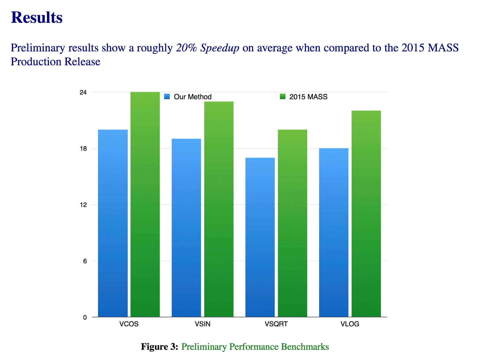
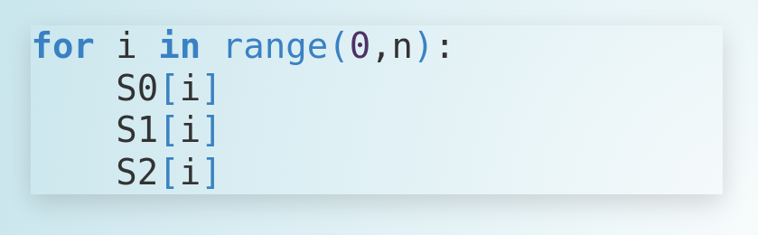
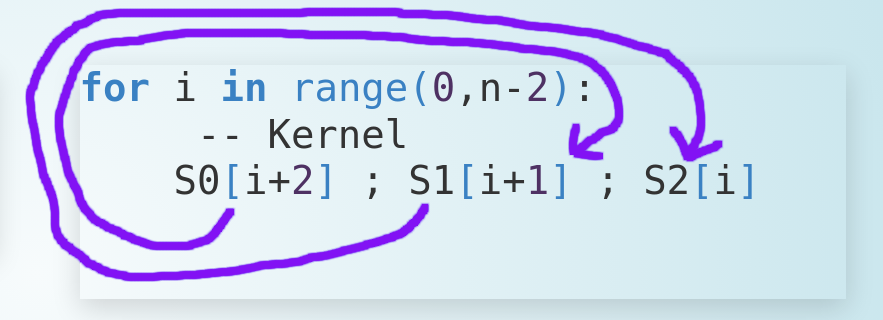

Coconut: A Rapid Prototyping Environment for Compiler Optimization
Curtis D'Alves
2022-08-24
Background
Who Am I?
- Ph.D Candidate McMaster University
- Did my Master's in Continuous Optimization Algorithms
- Working on CAS Project 1006
- Functional Programming / NixOS / Emacs enthusiast
CAS Project 1006
Stochastic Algorithms for Instructions Scheduling Emphasis on:
- finding near-optimal schedules for performance critical code
- modulo scheduling for loop bodies
- Out-of-order architectures
- The z/OS IBM MASS math libraries
with
- PI Christopher Anand, McMaster
- RCL Robert Enenkel, IBM
Current Benchmarks

- And a 13% increase on exp recently
Previous Work: Kriston Costa
- Previous CAS student and IBMer
- Utilized modified version of Kargers Min Cut Algorithm
- Approximation Algorithm that can be performed stochastically
- Takes successive min-cuts across a graph (dependency graph will minimize register pressure)
Karger's Minimum Cut Algorithm
 Cuts create groups that are candidates to interleave across stages in modulo scheduling
Cuts create groups that are candidates to interleave across stages in modulo scheduling
My Work
Continuous Optimization Model For Modulo Scheduling
NOTE: dispatch and completion times are designed to model OoO (Out of Order) execution machines
Constrained Optimization Model
Key Idea: Encode choice heuristics as penalties, adjust preference between heuristics by scaling
Lifetime Penalty
- IDEA penalize the overall lifetime of an instruction
- Note This is a penalty not a hard constraint on latencies
Stochastic Scaling
IDEA use random variables to scale penalties
Rapid Prototyping With COCONUT
COCONUT:( COode CONstructing User Tool )

Coconut Domain Specific Language (DSL)
class CoreISA r where unintegerG :: Integer -> r GPR unintegerV :: Integer -> r VR add :: r GPR -> r GPR -> r GPR mult :: r GPR -> r GPR -> r GPR vadd :: r VR -> v VR -> v VR ...
- Performance critical assembly code can be encoded in the Coconut DSL
- Example COCONUT DSL
Coconut Example Basic Block
sampleDSL :: CoreISA r => r GPR -> r GPR -> (r GPR,r GPR) sampleDSL r1 r2 = let r3 = add r2 r1 r4 = add r3 r1 r5 = add r4 r2 in (r5,r4)
We can encode basic blocks in the Coconut DSL
One Piece of Code, alot of Functionality
- Type Safety
- Single Static Assignment
- Code generation
- Interpretation
- Simulation
Hashed Expression Optimization DSL
lifeTimePenalty :: Hardware h => Double -> HashedData h -> [TypedExpr Scalar R] lifeTimePenalty scale hashedData = let instructions = hdAllInstructions hashedData tVars = tVarMap hashedData cVars = cVarMap hashedData in map (\n -> scale * (cVars ! n - tVars ! n)) instructions
We can easily encode our Lifetime Penalty from before
Control Flow DSL

testCFG dfA dfB dfC = do blockA <- genBlock dfA blockB <- genBlock dfB blockC <- genBlock dfC branchCFN (cfOut blockA) (cfIn blockB) (cfIn blockC) jumpCFN (cfOut blockC) (cfIn blockA)
Functional Data Flow Graphs
data DataFlowGraph h = DataFlowGraph { -- the underlying functional graph structure dataFlowGraph :: Gr (DFNode h) DFEdge -- inputs nodes with tags , dataFlowInputs :: [(String,Node)] -- output nodes with tags , dataFlowOutputs :: [(String,Node)] ... }
Basic blocks are encoded as Data Flow Graphs with tagged inputs/outputs
Tagged Data Flow Graphs
f :: CoreISA r => r GPR -> r GPR -> (r GPR,r GPR) f x y = let z = add x y n = mult z x in (z,n)
dfGraph :: DataFlowGraph h dfGraph = { dataFlowGraph = ... ,dataFlowInputs = [("x",0),("y",1)] ,dataFlowOutputs = [("z",2),("n",3)] ... }
Data Flow Graph Combinators
-- partition a graph by a given predicate partitionDFGraph :: forall h . Hardware h => DataFlowGraph h -> (Node -> Bool) -> (DataFlowGraph h,DataFlowGraph h) -- iteratively apply partitionDFGraph into n stages multiPartDFGraph :: forall h . Hardware h => DataFlowGraph h -> (Int -> Node -> Bool) -> Int -> [DataFlowGraph h]
Decomposition
Data Flow Graph Combinators
-- unpartition a graph (by tying together input/output node tags) unPartDFGraph :: forall h . Hardware h => DataFlowGraph h -> DataFlowGraph h -> DataFlowGraph h -- merge graphs in parallel (for software pipelining) parallelMergeDFGraph :: forall h . Hardware h => (DataFlowGraph h,DataFlowGraph h) -> DataFlowGraph h
Recomposition
Software Pipelining Case Study
 Sample loop body
 Pipelined loop body
Software Pipelining Case Study
numStages :: Int withinStage :: Int -> Node -> Bool ... partDFGraphs :: [DataFlowGraph h] partDFGraphs = multiPartDFGraph dfGraph withinStage numStages
Partition the data flow graph by stage
Software Pipelining Case Study
partitionDFGraph
dfGraph = { dataFlowGraph = ... ,dataFlowInputs = [("x",0)("y",1)] ,dataFlowOutputs = [("x",2)("y",3)] ... }
dfGraph0 = { dataFlowGraph = ... ,dataFlowInputs = [("x:0",0)("y:0",1)] ,dataFlowOutputs = [("i0:0",2)("i1:0",3)] ... } dfGraph1 = { dataFlowGraph = ... ,dataFlowInputs = [("i0:1",4)("i1:1",5)] ,dataFlowOutputs = [("x:1",6)("y:1",7)] ... }
Software Pipelining Case Study
kernel :: DataFlowGraph kernel = parallelMergeDFGraphs (map applyIncrement partDFGraphs)
Apply transformations to each partition and then pipeline using parallelMergeGraphs
Software Pipelining Case Study
parallelMergeGraphs
dfGraph0 = { dataFlowGraph = ... ,dataFlowInputs = [("x:0",0),("y:0",1)] ,dataFlowOutputs = [("i0:0",2),("i1:0",3)] ... } dfGraph1 = { dataFlowGraph = ... ,dataFlowInputs = [("i0:1",4),("i1:1",5)] ,dataFlowOutputs = [("x:1",6),("y:1",7)] ... }
dfGraph = { dataFlowGraph = ... ,dataFlowInputs = [("x:0",0),("y:0",1) ,("i0:1",4),("i1:1",5)] ,dataFlowOutputs = [("i0:0",2),("i1:0",3) ,("x:1",6),("y:1",7)] ... }
Control Flow Graph Composition
controlFlowGraph dfGraph0 dfGraph1 = do blockA <- genBlock $ dfGraph0 blockB <- genBlock $ dfGraph1 jumpCFS (\tag0 tag1 -> increment tag0 == tag1) (cfOut blockA) (cfIn blockB)
Generate a control flow graph that ties performs a jump, tying together tags that satisfy a given predicate
Future Work
- Analysis of schedule space
- Use statistical inference to estimate optimal schedule
- New heuristics
- New performance critical code sections to benchmark against?
Questions?
- curtisda@ca.ibm.com
- enenkel@ca.ibm.com